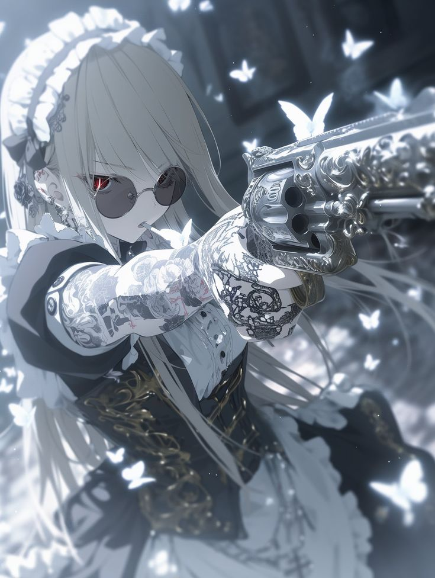

🔥 Roza Zonix — Полное досье

📜 Основная информация
- Имя: Roza Zonix (Роза Зоникс)
- Пол: Женский
- Возраст: 22 года
- Раса: Человек (с примесью демонической крови?)
- Мировоззрение: Нейтрально-доброе (но без жалости к врагам)
- Стиль боя: Гибридный (ближний + дальний + магия)
🎭 Характер
✔ Сильные стороны
- Хладнокровна — не паникует даже в безвыходных ситуациях
- Стратег — быстро анализирует слабые места противника
- Предана друзьям и брату и семья — ради них готова на всё
- Ироничное чувство юмора — может шутить даже в бою
✖ Слабые стороны
- Не доверяет новым людям (из-за прошлого)
- Иногда слишком жестока (если враг задел её принципы)
- Ненавидит, когда трогают её очки (может впасть в ярость)
⚔ Навыки и боевые способности
🔹 Физические навыки
- Выносливость: ★★★★★ (очень быстро бегает но когда дождь ещё 3 раза быстрей)
- Скорость: ★★★★★ (молниеносные атаки)
- Гибкость: ★★★★☆ (уворачивается от пуль)
- Сила: ★★★☆☆ (не самая сильная, но техника компенсирует)
🔹 Ближний бой
- Стиль: Смесь крав-мага и фехтования
- Особые приёмы:
- «Кровавая роза» — серия быстрых ударов, оставляющих следы, как лепестки
- «Танцующая смерть» — вращение с клинками, создающее смертельный вихрь
🔹 Дальний бой
- Меткость: 999% попаданий (практически не промахивается)
- Любимый приём:
- «Белый смерч» — 6 выстрелов за 2 секунды в одну точку
🔹 Магические способности
- Тип магии: Тёмная эссенция (поглощает силы демонов)
- Заклинания:
- «Проклятие безмолвия» — лишает врага дара речи и магии
- «Клинки теней» — создаёт 4 летающих кинжала из тьмы
🔫 Оружие и артефакты
1️⃣ Белый револьвер «Lumina»
- Патроны: Серебряные (против нежити) + магические (против демонов)
- Особенность: Может стрелять световыми зарядами (ослепляет врагов)
2️⃣ Клинки-кастеты «Shadow Rose»
- Материал: Обсидиан + демоническая сталь и ангельская сталь
- Эффект: Раны от них не заживают без магии
3️⃣ Очки «Nighthawk»
- Функции:
- Видит ауры (определяет силу врага)
- Ночное зрение (до 500 метров и выше до 700 метров но тумане меньше 400 метров)
- Защита от ослепляющих атак
4️⃣ Татуировки «Demon Seal»
- Значение:
- Левая рука — печать, сдерживающая демоническую силу
- Если снять — Roza становится в 4 раза сильнее, но теряет контроль
🌍 История (коротко)
Раньше Roza была охотницей на демонов в секретной организации, но после предательства ушла в свободное плавание. Теперь работает наёмницей, но берёт только те задания, которые не противоречат её морали.
🎨 Внешность (уточнённое описание)
- Волосы: Чёрные с алыми прядями
- Глаза: Алые, светятся в темноте (если использует магию)
- Одежда:
- Чёрно-белый костюм горничной (бронепластины скрыты под тканью)
- Высокие сапоги со встроенными клинками
📌 Теги персонажа
боевая горничная
охотник на демонов
магия тьмы
крутой стрелок
трагическое прошлое